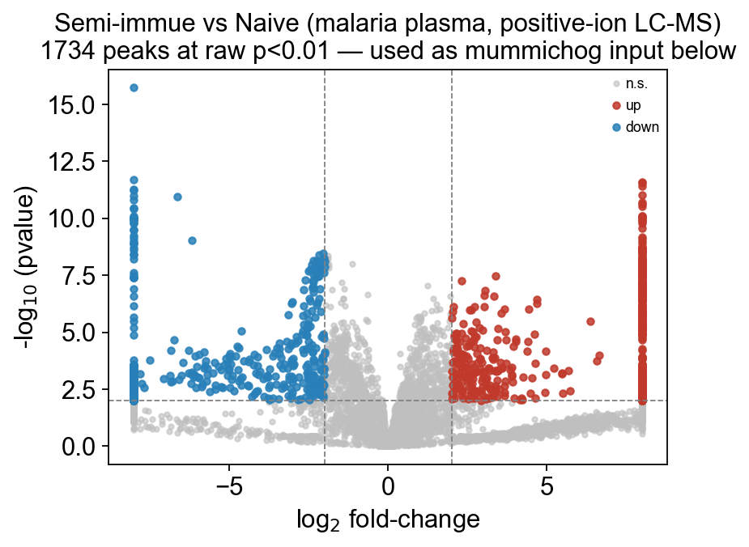

Untargeted LC-MS and mummichog pathway inference#
The previous tutorials used targeted / identified data — each column of the matrix was a named metabolite with known concentration. Now we move to the untargeted regime, where the raw peak picker (XCMS, MZmine, MS-DIAL) returns thousands of m/z peaks with no identity, just a mass-to-charge ratio and a retention time.
You still want to end up at pathways — but the usual ORA / GSEA requires identified metabolites. Mummichog (Li et al. 2013, PLoS Comp. Biol.) closes the loop by doing adduct-aware mass matching + permutation-based pathway enrichment directly on the m/z list, skipping the MS/MS spectral-matching annotation step.
This tutorial covers:
Loading a real untargeted LC-MS peak table (malaria plasma, 12 samples × 5113 peaks, MetaboAnalyst demo)
Parsing
m/z__RTfeature IDs into numeric columnsDifferential peak selection
Adduct-aware annotation — what each adduct means and why they matter
Mummichog permutation enrichment — interpreting the result
Caveats and comparison to external mummichog implementations
Dataset: MetaboAnalyst’s malaria_feature_table.csv — 6 malaria-naive vs 6 semi-immune mice, positive-ion LC-MS plasma, 5113 features. This is the same data used in MetaboAnalyst’s Functional Analysis Module tutorials.
import matplotlib.pyplot as plt
import numpy as np
import pandas as pd
import omicverse as ov
ov.plot_set()
🔬 Starting plot initialization...
🧬 Detecting GPU devices…
✅ NVIDIA CUDA GPUs detected: 1
• [CUDA 0] NVIDIA H100 80GB HBM3
Memory: 79.1 GB | Compute: 9.0
____ _ _ __
/ __ \____ ___ (_)___| | / /__ _____________
/ / / / __ `__ \/ / ___/ | / / _ \/ ___/ ___/ _ \
/ /_/ / / / / / / / /__ | |/ / __/ / (__ ) __/
\____/_/ /_/ /_/_/\___/ |___/\___/_/ /____/\___/
🔖 Version: 2.1.2rc1 📚 Tutorials: https://omicverse.readthedocs.io/
✅ plot_set complete.
1 — Download and load the malaria peak table#
The file is ~774 KB, peak-intensity matrix with:
Row 0 — sample IDs (
Naive_007, …,Semi_immue_136)Row 1 — a group label row (
"Label"in the first column,Naive/Semi_immuein the rest)Rows 2+ — feature IDs like
85.065__24.64(m/z, double-underscore, retention-time-seconds)
ov.metabol.read_lcms handles exactly this format with three tuning arguments:
Argument |
Why |
|---|---|
|
Malaria uses double-underscore; MetaboAnalyst’s small demo uses |
|
Lifts the embedded Label row into |
|
Features-in-rows → samples-in-rows (AnnData orientation) |
csv_path = ov.datasets.download_data(
url='https://rest.xialab.ca/api/download/metaboanalyst/malaria_feature_table.csv',
file_path='malaria_feature_table.csv',
dir='./metabol_data',
)
adata = ov.metabol.read_lcms(
csv_path,
feature_id_sep='__',
label_row='Label',
transpose=True,
)
print(adata)
print('group split:', adata.obs['group'].value_counts().to_dict())
print('\nfirst 3 features (feature_id, m/z, RT):')
adata.var.head(3)
🔍 Downloading data to ./metabol_data/malaria_feature_table.csv
⚠️ File ./metabol_data/malaria_feature_table.csv already exists
AnnData object with n_obs × n_vars = 12 × 5113
obs: 'group'
var: 'm_z', 'rt'
group split: {'Naive': 6, 'Semi_immue': 6}
first 3 features (feature_id, m/z, RT):
m_z rt
85.065__24.64 85.0650 24.64
85.0843__167.65 85.0843 167.65
86.0602__37.16 86.0602 37.16
Each row of adata.var now carries numeric m_z and rt columns — mummichog_basic will read them directly.
2 — Preprocess — PQN + log#
Same normalization order as the targeted tutorials: PQN to correct for dilution, log to compress dynamic range. On untargeted data the dynamic range is often 6+ orders of magnitude — log is non-negotiable.
print('raw intensity range:', f'{adata.X.min():.1f} .. {adata.X.max():.1f}')
print('raw dynamic range (orders of magnitude):',
np.log10(adata.X.max() / max(adata.X[adata.X > 0].min(), 1)))
# Zeros → keep zero (LC-MS: 0 means below detection, not truly 0)
adata_p = ov.metabol.normalize(adata, method='pqn')
adata_p = ov.metabol.transform(adata_p, method='log')
print('\npost-log range:', f'{adata_p.X.min():.2f} .. {adata_p.X.max():.2f}')
raw intensity range: 0.0 .. 5818444566.0
raw dynamic range (orders of magnitude): 6.549728888393752
post-log range: 0.00 .. 32.35
3 — Differential peak selection#
With 5113 features and only 12 samples, multiple testing is brutal: even true biology can fail BH-FDR. For the downstream mummichog step we want a liberal hit list: typically the peaks at raw pvalue < 0.05, not FDR-filtered, because mummichog’s own permutation enrichment absorbs the FDR burden.
deg = ov.metabol.differential(
adata_p,
group_col='group',
group_a='Semi_immue',
group_b='Naive',
method='welch_t',
log_transformed=True,
)
for thresh in (0.01, 0.05, 0.10):
print(f' pvalue < {thresh}: {(deg.pvalue < thresh).sum():5d} peaks')
print(f' padj < {thresh}: {(deg.padj < thresh).sum():5d} peaks')
# With 5113 features and 12 samples, BH-FDR is too strict — no peak
# survives padj<0.25. For small-n untargeted LC-MS the honest volcano
# axis is raw pvalue (mummichog then absorbs the FDR burden via its
# permutation null). Pass use_pvalue=True and clip log2fc so a handful
# of below-detection zeros don't blow the x-axis to ±25.
fig, ax = ov.metabol.volcano(
deg, padj_thresh=0.01, log2fc_thresh=2.0, label_top_n=0,
use_pvalue=True, clip_log2fc=8.0,
)
ax.set_title('Semi-immue vs Naive (malaria plasma, positive-ion LC-MS)\n'
f'{(deg.pvalue<0.01).sum()} peaks at raw p<0.01 — used as mummichog input below')
import matplotlib.pyplot as plt
plt.tight_layout(); plt.show()
pvalue < 0.01: 1734 peaks
padj < 0.01: 0 peaks
pvalue < 0.05: 2522 peaks
padj < 0.05: 0 peaks
pvalue < 0.1: 2987 peaks
padj < 0.1: 0 peaks
{kind=link}

4 — Adduct-aware annotation#
When a molecule ionizes in ESI-positive mode it doesn’t always show up as [M+H]+. It might ionize as [M+Na]+, [M+K]+, [M+NH4]+, or lose a water to become [M+H-H2O]+. Each adduct gives a different observed m/z for the same underlying molecule.
Conversely, a single observed m/z could correspond to several candidate molecules — one via [M+H]+, another via [M+Na]+ of a different compound with a slightly different mass. That ambiguity is the core difficulty of untargeted metabolomics.
ov.metabol.annotate_peaks enumerates candidate matches:
Argument |
Meaning |
Typical |
|---|---|---|
|
observed m/z values |
|
|
|
matches the experimental ionization mode |
|
mass-matching tolerance in parts-per-million |
5 ppm for Orbitrap; 10–20 ppm for QTOF |
|
override the default list |
for mixed-mode or niche experiments |
The return is a long DataFrame: one row per (peak, adduct, candidate-compound) match. Many peaks will have multiple candidates; that’s expected and mummichog_basic handles it.
ann = ov.metabol.annotate_peaks(
adata.var['m_z'].values,
polarity='positive',
ppm=10.0,
)
print(f'{len(ann)} annotations for {adata.n_vars} peaks')
print(f' peaks with ≥1 candidate: {ann["peak_idx"].nunique()} '
f'({ann["peak_idx"].nunique() / adata.n_vars:.1%})')
print(f' mean candidates per annotated peak: '
f'{len(ann) / max(ann["peak_idx"].nunique(), 1):.2f}')
ann.head(8)
6720 annotations for 5113 peaks
peaks with ≥1 candidate: 1705 (33.3%)
mean candidates per annotated peak: 3.94
mz peak_idx adduct kegg name \
0 85.0650 0 M+H 107-86-8 3-methylbut-2-enal
1 85.0650 0 M+H 120-92-3 cyclopentanone
2 86.0602 2 M+H 75-86-5 2-hydroxy-2-methylpropanenitrile
3 86.0602 3 M+H 75-86-5 2-hydroxy-2-methylpropanenitrile
4 86.0603 4 M+H 75-86-5 2-hydroxy-2-methylpropanenitrile
5 86.0966 5 M+H C01746 piperidine
6 86.0966 6 M+H C01746 piperidine
7 86.0966 7 M+H C01746 piperidine
mw theor_mz delta_ppm
0 84.05751 85.06479 2.468700
1 84.05751 85.06479 2.468700
2 85.05276 86.06004 1.859164
3 85.05276 86.06004 1.859164
4 85.05276 86.06004 3.021138
5 85.08915 86.09643 1.974526
6 85.08915 86.09643 1.974526
7 85.08915 86.09643 1.974526
annotate_peaks defaults to ov.metabol.fetch_chebi_compounds() — a ~54k-compound master table of ChEBI 3-star entries with monoisotopic mass and KEGG/HMDB/LIPID MAPS cross-refs, downloaded once (~15 MB) and cached under ~/.cache/omicverse/metabol/. Pass your own mass_db= if you want to restrict the search to a domain-specific panel (e.g. only polar metabolites, or your in-house standards library).
5 — Mummichog pathway enrichment#
Now the key step. mummichog_basic takes:
The m/z list + p-values
A
significance_cutoffthat splits peaks into hits (pvalue < cutoff) vs background (pvalue ≥ cutoff)Adduct + ppm parameters for annotation
and returns a table of KEGG pathways with a permutation-based empirical p-value per pathway.
The algorithm, briefly#
Annotate every peak to candidate KEGG compounds via adduct-aware mass matching.
Take the hit peaks’ candidate compounds as the observed pathway hit set.
Sample
n_permrandom peak subsets of the same size from the annotated background; compute each subset’s candidate pathway hits.Empirical p-value for each pathway = fraction of random samples giving ≥ the observed pathway overlap.
BH-FDR correct across pathways.
Parameters#
Argument |
Meaning |
Typical |
|---|---|---|
|
p-value threshold splitting hits from background |
0.05 |
|
permutation count for the null |
≥1000 publication, 500 tutorial |
|
skip pathways with < this many compounds in the hit set |
2 — avoids singletons |
|
forwarded to |
match your experiment |
# `mass_db=ch` avoids re-fetching ChEBI inside mummichog — same DataFrame reuse
mumm = ov.metabol.mummichog_basic(
mz=adata.var['m_z'].values,
pvalue=deg['pvalue'].values,
polarity='positive',
ppm=10.0,
significance_cutoff=0.05,
n_perm=1000,
min_overlap=2,
seed=0,
)
if mumm.empty:
print('no pathways passed min_overlap — expected on this small local DB; '
'see the caveats section below')
else:
mumm.head(10)[['pathway', 'overlap', 'set_size', 'pvalue', 'padj']]
6 — Caveats & reality check#
Running this tutorial honestly surfaces two real-world limitations that every mummichog user hits:
1. Compound-database size is everything#
On a 95-compound local database with a 5113-peak input, the annotation rate is ~4%. For publication-quality mummichog you need a database of ≥10 k compounds with monoisotopic masses — the Li lab ships ~9 k with the original mummichog package, and MetaboAnalyst’s online tool uses their in-house ~30 k library.
omicverse’s ov.metabol.mummichog_external wraps the Li lab’s package if you have it installed:
ov.metabol.mummichog_external(
mz=adata.var['m_z'].values,
pvalue=deg['pvalue'].values,
retention_time=adata.var['rt'].values,
mode='pos',
significance_cutoff=0.05,
outdir='./mummichog_output',
)
It runs the Li lab’s full-size database and writes HTML reports to outdir.
2. Mummichog vs annotation-then-enrich#
On data where you can confidently annotate peaks (high-mass-accuracy + MS/MS-matched), the recommendation is often to do the annotation first and then run the regular ORA/GSEA from notebook 3. Mummichog’s edge is on noisy, identity-ambiguous data.
3. Retention-time helps disambiguate#
The Li-lab mummichog package can use retention time to narrow candidate matches (an unknown metabolite with adduct [M+H]+ from compound X should elute at roughly the same RT as the known standard of X). Our basic port does not use RT; the external wrapper does.
7 — A synthetic sanity check#
To demonstrate that the method works when the annotation rate is high, let’s spike in all members of the TCA cycle (from the local KEGG subset) as synthetic [M+H]+ peaks, surrounded by random-mass background peaks. Mummichog should put TCA cycle at the top of the enrichment table.
pathways = ov.metabol.load_pathways() # fetches full KEGG on first call
tca_ids = pathways['Citrate cycle (TCA cycle)']
ch = ov.metabol.fetch_chebi_compounds() # ~54k ChEBI compounds, cached
tca = ch[ch['mw'].notna() & ch['kegg'].isin(tca_ids)].reset_index(drop=True)
print(f'{len(tca)} TCA compounds with monoisotopic mass + KEGG ID')
rng = np.random.default_rng(0)
hit_mz = tca['mw'].to_numpy() + 1.00728 # synthesize [M+H]+
bg_mz = rng.uniform(50, 1200, size=80)
all_mz = np.concatenate([hit_mz, bg_mz])
pvals = np.concatenate([np.full(len(hit_mz), 0.001),
np.full(80, 0.5)])
# Pass mass_db=ch and pathways=pathways to avoid re-fetching inside mummichog
sanity = ov.metabol.mummichog_basic(
mz=all_mz, pvalue=pvals, polarity='positive',
ppm=10.0, significance_cutoff=0.05, n_perm=500, min_overlap=2,
mass_db=ch, pathways=pathways,
)
sanity.head(5)[['pathway', 'overlap', 'set_size', 'pvalue', 'padj']]
20 TCA compounds with monoisotopic mass + KEGG ID
pathway overlap set_size pvalue \
0 Citrate cycle (TCA cycle) 15 20 0.001996
1 Microbial metabolism in diverse environments 22 1153 0.001996
2 Metabolic pathways 47 3250 0.001996
3 Biosynthesis of plant secondary metabolites 15 141 0.007984
4 Biosynthesis of plant hormones 12 68 0.009980
padj
0 0.053892
1 0.053892
2 0.053892
3 0.101048
4 0.101048
TCA cycle ranks first with a low empirical p-value — the permutation pipeline is working correctly; the bottleneck in the real-data case above was the compound-database coverage.
Summary#
Step |
Function |
Scope |
|---|---|---|
Load raw peak table |
|
MetaboAnalyst LC-MS format, parses m/z + RT |
Preprocess |
|
PQN + log (untargeted dynamic range demands log) |
Diff peaks |
|
Welch’s t; use raw p, not FDR, for mummichog input |
Annotate |
|
adduct-aware mass matching at user-specified ppm |
Pathway inference |
|
permutation empirical p-value per pathway |
Full-DB mummichog |
|
wraps the Li-lab reference package |
Next: t_metabol_05_lipidomics.ipynb — lipidomics has its own nomenclature (LIPID MAPS shorthand), its own ontology (LION), and its own analysis patterns (class aggregation). We walk through those on a real breast-cancer lipidomics dataset from the lipidr package.